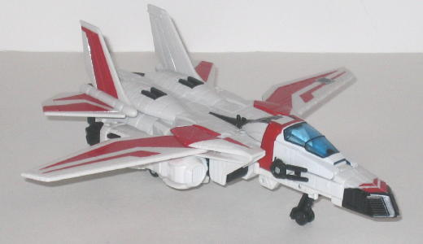
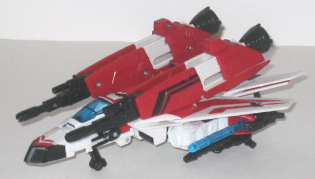
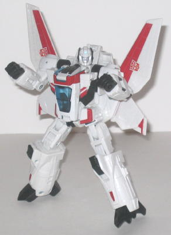
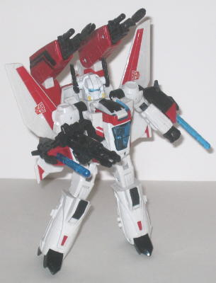

Allegiance
: Autobot
Size
: Voyager
Difficulty of Transformation
: Easy
Color Scheme
: White, red, black,
and some transparent light blue, dull yellow, light metallic silvery blue,
and silver
Rating
: 9.3


Jetfire's alternate
mode is a futuristic jet fighter. This toy is very much a homage to the
original G1 toy, which was actually a Macross jet toy. In this mode, the
homage is obvious in the shape of the nosecone, which is very Macross-ish.
The original white, red, and black color scheme is kept-- it's a simple
color scheme, and I wish a few more colors were evident on Jetfire to make
him more eye-catching, but they still certainly work. The red stripes on
the wings and nosecone look especially good and add to the fairly sleek
shape of the toy. Jetfire's also got a ton of mold detailing for something
like a jet, with a lot of "bolted metal panel" detailing, especially on
the main body of the jet. (Also, his allegiance rub symbol is on his right
main wing, in case you're wondering.) There is a fairly major robot extra
in this mode-- his robot hands on the sides of his main jet body are pretty
darned obvious. The missile launchers on the sides of them help to hide
them a LITTLE, but not much. Another, more minor, robot extra is the robot
head that's visible through the transparent cockpit. That's it, though,
and other than that this is a very solid alt mode. Where this mode (and
indeed, the toy itself) really excels, and where its main buying power
lies, is in the different weapon configurations it has. I mean, really,
Jetfire's PACKED with firepower. In jet mode, he has a fairly standard
"normal jet mode", with all the weapons except the dual guns on the side
of the nosecone removes. This allows the tail fins to fold open, though
the downsides to this configuration are that the robot hands are even more
obvious and there's nowhere else on the toy to put the extra gun parts.
With all his weapons attached, though, MAN does Jetfire look like a butt-kicker.
Besides the aforementioned nosecone guns, he has two side-mounted spring-loaded
missile launchers, two guns on the underbelly (that combine to form a double-barreled
gun for robot mode), and two HUGE guns on the back of this mode. To flip
them out, slide the red pieces of plastic back and the two double-barreled
guns flip out. Awesome! Oh, and Jetfire also has three retractable landing
gear in this mode, too-- always good for a jet Transformer.


Jetfire's transformation
is fairly straightforward-- it's not much more than "stand me up and unfold
my appendages"-- but his robot mode is very nice proportionally, and I
love the "butterfly wing" style used for the wings on his back. Jetfire
also has excellent articulation-- he can move at the head, shoulders (at
two points), elbows (at two points), wrists, hips (at two points), and
knees (at two points). Although he's not back heavy, the fact that his
feet actually are at a diagonal angle to the ground and don't sit flat
on a surface limit his stability, albeit not by much. As with his jet mode,
his main draw is that his robot mode has two different configuration--
the aforementioned "normal" configuration, with all his weapons removed
and his normal cartoon-accurate head shown, and the "butt kicker" mode,
with his big over-the-shoulder guns, his arm-mounted missile launchers,
and his handheld double-barreled gun. In a second nod to his original Macross
form, Jetfire also has a helmet, styled after the original Macross figure,
that fits over his normal head! Very cool, although like the weapons, there's
nowhere to store it when it's not in use.
Classics Jetfire may
not be the most innovative, imaginative Transformer ever, both in terms
of overall transformation design and color scheme, but both of his modes
are pretty solid and I LOVE his myriad weapons and battle helmet. Highly
recommended.
Review by Beastbot